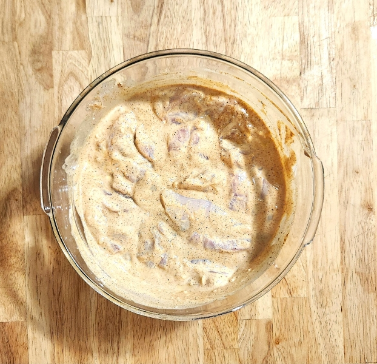
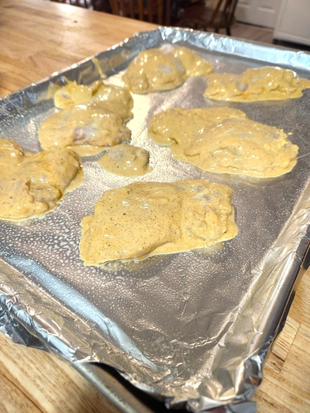
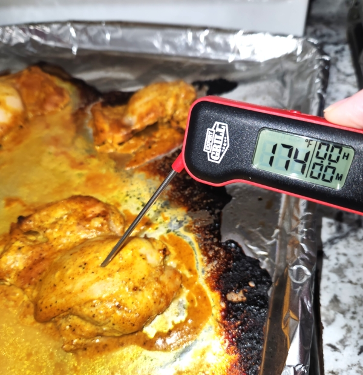

I discovered this recipe when I accidently bought a large tub of plain greek yogurt thinking it was vanilla. Prior to that I never cooked chicken with yogurt, and boy was I missing out! I altered the recipe I found online because I didn't have all the ingredients on hand. If you have fresh limes on hand I suggest using them, Also adding the lime zest adds to the flavor. Origanally the recipe asked for fresh lemon juice, all I hand was bottled lime juice. I loved the flavor of the lime with the optional cayenne pepper. Oh my goodness this chicken was so good the first time only after 4 hours marinating, but I definitly suggest you try it overnight! These are also awesome preppared as kabobs and cooked on the grill!
Gather all your ingredients.
Wash and trim fat from chicken, then place in a bowl dried off with paper towel.
Dump all ingredients on top of chicken and mix well.
Cover chicken and place in fridge. Set out on counter 20 mins before preheating the oven.
Line a cookie sheet with foil and coat with nonstick spray. This makes for easy clean up! Don't crowd the pan.

Tip: Put oven rack in the middle of the oven. Check internal temp after 20 mins. Chicken should be atleast 165°F.
Lime-Kissed Yogurt Chicken, boneless, skinless chicken thighs are marinated in a creamy yogurt and zesty lime mixture, then roasted or pan-seared to juicy perfection. The yogurt keeps the chicken tender and moist, while the lime adds a bright, tangy kick that pairs beautifully with aromatic herbs and spices. Perfect for a simple weeknight dinner or a cozy family meal, this dish is full of flavor without being fussy. Serve it with rice, roasted veggies, or a fresh salad for a satisfying, wholesome plate.
Serves 4-6
Prep Time: 15 mins
Marinate Time: 1-4 Hours. Or overnight
Cook Time: 25-30 Mins